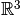

dipy.core.sphere_stats¶
Statistics on spheres
-
dipy.core.sphere_stats.angular_similarity(S, T)¶ Computes the cosine distance of the best match between points of two sets of vectors S and T
Parameters: S : array, shape (m,d)
T : array, shape (n,d)
Returns: max_cosine_distance:float :
Examples
>>> import numpy as np >>> from dipy.core.sphere_stats import angular_similarity >>> S=np.array([[1,0,0],[0,1,0],[0,0,1]]) >>> T=np.array([[1,0,0],[0,0,1]]) >>> angular_similarity(S,T) 2.0 >>> T=np.array([[0,1,0],[1,0,0],[0,0,1]]) >>> S=np.array([[1,0,0],[0,0,1]]) >>> angular_similarity(S,T) 2.0 >>> S=np.array([[-1,0,0],[0,1,0],[0,0,1]]) >>> T=np.array([[1,0,0],[0,0,-1]]) >>> angular_similarity(S,T) 2.0 >>> T=np.array([[0,1,0],[1,0,0],[0,0,1]]) >>> S=np.array([[1,0,0],[0,1,0],[0,0,1]]) >>> angular_similarity(S,T) 3.0 >>> S=np.array([[0,1,0],[1,0,0],[0,0,1]]) >>> T=np.array([[1,0,0],[0,np.sqrt(2)/2.,np.sqrt(2)/2.],[0,0,1]]) >>> angular_similarity(S,T) 2.7071067811865475 >>> S=np.array([[0,1,0],[1,0,0],[0,0,1]]) >>> T=np.array([[1,0,0]]) >>> angular_similarity(S,T) 1.0 >>> S=np.array([[0,1,0],[1,0,0]]) >>> T=np.array([[0,0,1]]) >>> angular_similarity(S,T) 0.0 >>> S=np.array([[0,1,0],[1,0,0]]) >>> T=np.array([[0,np.sqrt(2)/2.,np.sqrt(2)/2.]])
Now we use
printto reduce the precision of of the printed output (so the doctests don’t detect unimportant differences)>>> print angular_similarity(S,T) 0.707106781187 >>> S=np.array([[0,1,0]]) >>> T=np.array([[0,np.sqrt(2)/2.,np.sqrt(2)/2.]]) >>> print angular_similarity(S,T) 0.707106781187 >>> S=np.array([[0,1,0],[0,0,1]]) >>> T=np.array([[0,np.sqrt(2)/2.,np.sqrt(2)/2.]]) >>> print angular_similarity(S,T) 0.707106781187
-
dipy.core.sphere_stats.compare_orientation_sets(S, T)¶ Computes the mean cosine distance of the best match between points of two sets of vectors S and T (angular similarity)
Parameters: S : array, shape (m,d)
First set of vectors.
T : array, shape (n,d)
Second set of vectors.
Returns: max_mean_cosine : float
Maximum mean cosine distance.
Examples
>>> from dipy.core.sphere_stats import compare_orientation_sets >>> S=np.array([[1,0,0],[0,1,0],[0,0,1]]) >>> T=np.array([[1,0,0],[0,0,1]]) >>> compare_orientation_sets(S,T) 1.0 >>> T=np.array([[0,1,0],[1,0,0],[0,0,1]]) >>> S=np.array([[1,0,0],[0,0,1]]) >>> compare_orientation_sets(S,T) 1.0 >>> from dipy.core.sphere_stats import compare_orientation_sets >>> S=np.array([[-1,0,0],[0,1,0],[0,0,1]]) >>> T=np.array([[1,0,0],[0,0,-1]]) >>> compare_orientation_sets(S,T) 1.0
-
dipy.core.sphere_stats.eigenstats(points, alpha=0.05)¶ Principal direction and confidence ellipse
Implements equations in section 6.3.1(ii) of Fisher, Lewis and Embleton, supplemented by equations in section 3.2.5.
Parameters: points : arraey_like (N,3)
array of points on the sphere of radius 1 in 
alpha : real or None
1 minus the coverage for the confidence ellipsoid, e.g. 0.05 for 95% coverage.
Returns: centre : vector (3,)
centre of ellipsoid
b1 : vector (2,)
lengths of semi-axes of ellipsoid
-
dipy.core.sphere_stats.random_uniform_on_sphere(n=1, coords='xyz')¶ Random unit vectors from a uniform distribution on the sphere
Parameters: n : int
Number of random vectors
coords : {‘xyz’, ‘radians’, ‘degrees’}
‘xyz’ for cartesian form ‘radians’ for spherical form in rads ‘degrees’ for spherical form in degrees
Returns: X : array, shape (n,3) if coords=’xyz’ or shape (n,2) otherwise
Uniformly distributed vectors on the unit sphere.
Examples
>>> from dipy.core.sphere_stats import random_uniform_on_sphere >>> X=random_uniform_on_sphere(4,'radians') >>> X.shape (4, 2) >>> X=random_uniform_on_sphere(4,'xyz') >>> X.shape (4, 3)